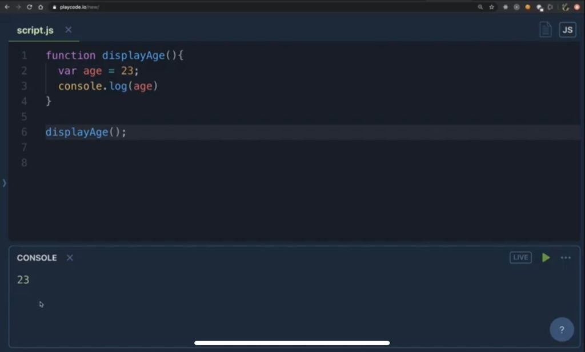
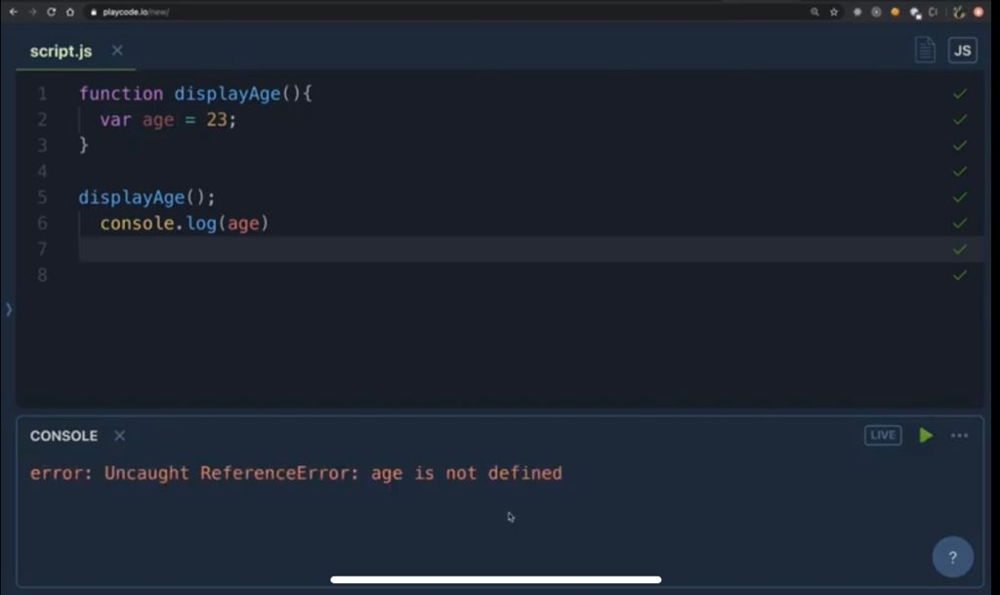
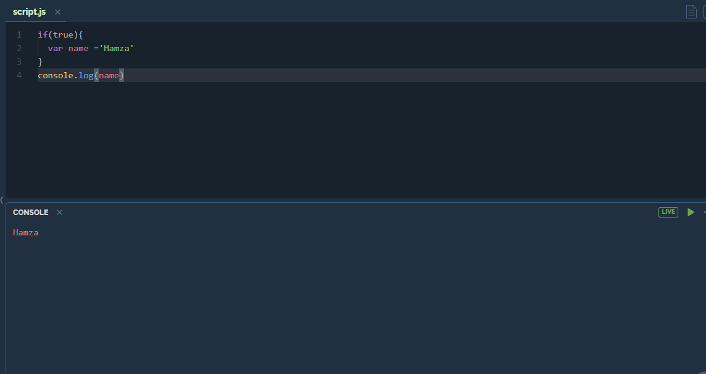
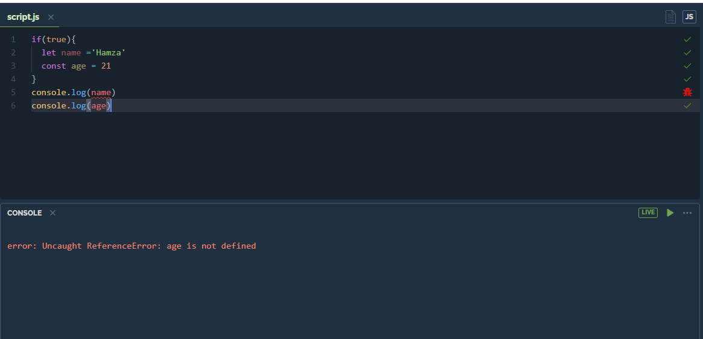
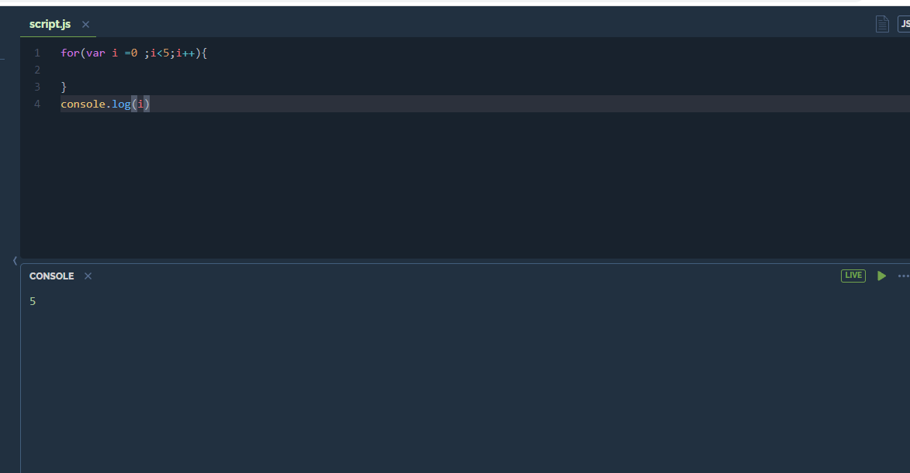
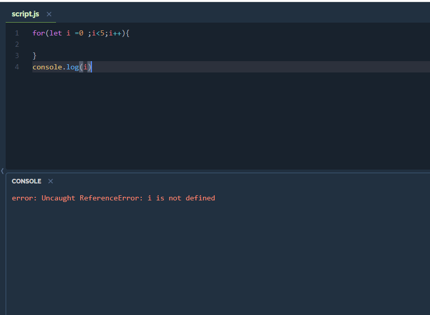
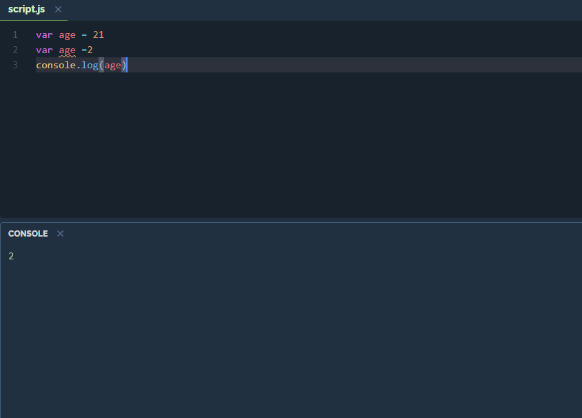
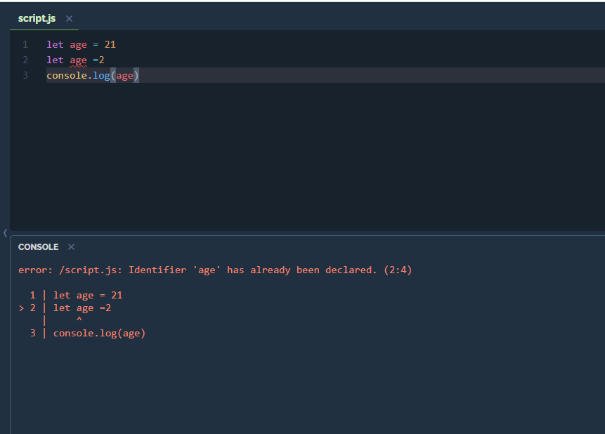
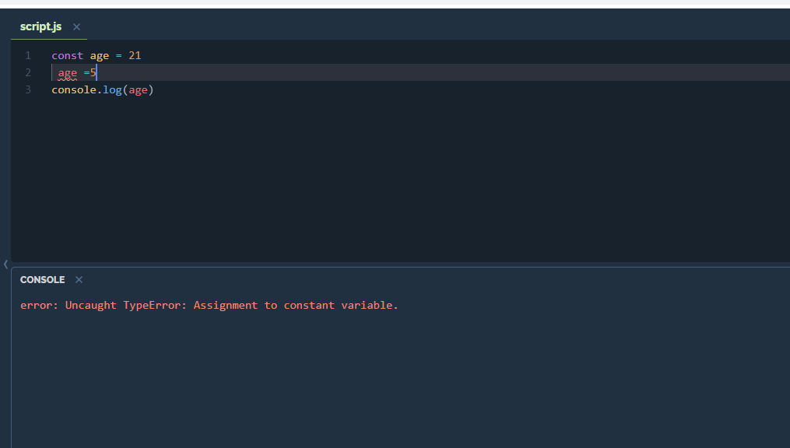

In this blog we are going to understand var , let and const that JavaScript offers also talk about their scope
In the above code snippet we are just displaying the age by calling function it will correctly log the age
Here we are moving the statement outside of the function .Here we're getting an error as you can see. The reason for the refrence error is because whatever variable you declare inside function actually belong to that function because when we execute function a scope is created for that function and when the function is done executing it will be remove from the stack and there is no memory of it . When we are trying to log age it is saying that age is not defined. By this we can conclude that any variable declared with var keyword is function scope i.e it scope is valid inside the function and not valid outside the function.
In JavaScript anything that is declared under curly brackets {} is known as block. A block is nothing but a multiple set of statements. In the above example we can see the name as Hamza is logging even though it is outside the block. Therefore we can conclude that var is not block scope
If we try the same code with let and const keyword we will get error as both are block scope. Their scope is valid in the block and not outside the block
For the above code snippet if we try to access the value of i outside of for loop it will show 5 but when we will try the same thing with let it will show an error as shown below
 In the above exmaple the value of age is 2 just because it was redeclared. That conclude that we can redeclare and reassinged variable if we use var
If we try the same thing with let or const it will show an error . Any variable that is declared with let keyword cannot be redeclared inside its scope . We can declare same variable using let into any other block or function
In the above example if we reassign or redeclared the variable using const keyword it will give an error
| var | let | const |
|---|---|---|
| Variables declared with var are in function scope | Variables declared with let are in block scope | Variables declared with var are in block scope |
| Variables declared with var can be redeclared and reassinged | Variables declared with let cannot be redeclared but can be reassinged | Variables declared with const cannot be redeclared and reassinged |